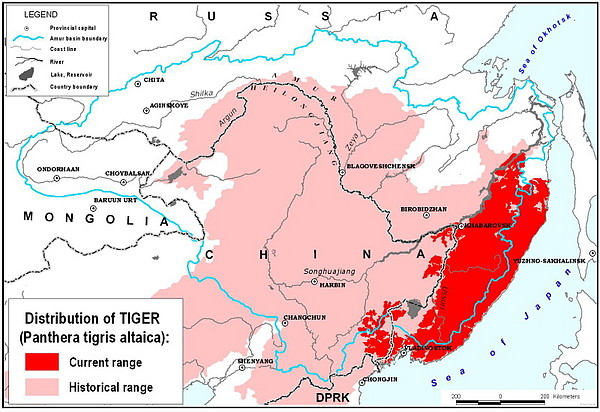
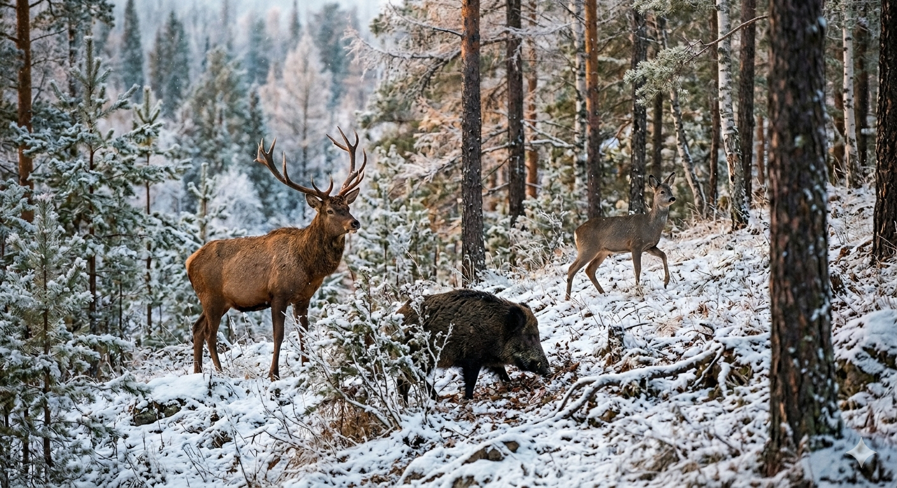
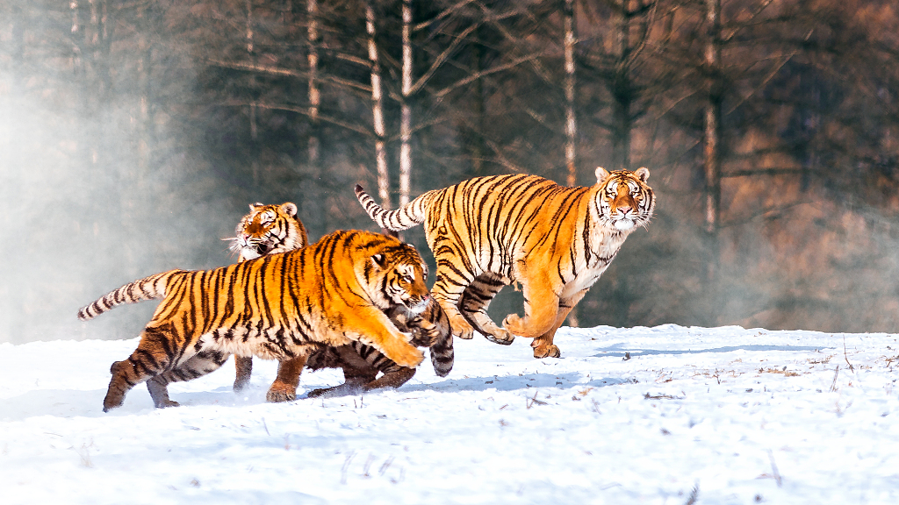
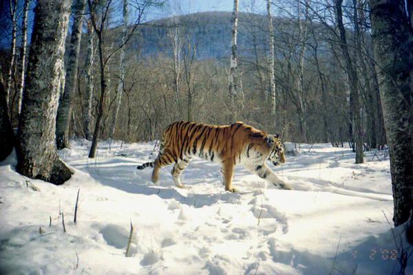

El Tigre Siberiano
Caracteristicas
Habitad y Ubicación
Habita bosques templados de coníferas, abedules y vegetación mixta en el sureste de Rusia (región del río Amur, montañas Sikhote-Alin), noreste de China y, en menor medida, Corea del Norte. Históricamente ocupó Corea, Mongolia y hasta el lago Baikal, pero ahora se limita a áreas remotas por deforestación y presión humana.
- Bosques templados de coníferas
- Abedules
- Vegetación mixta
Hábitats del tigre siberiano

Habitos Alimenticios
Es carnívoro estricto, cazando presas grandes como ciervos sika, uapitíes de Manchuria, alces, jabalíes, corzos siberianos y gorales; ocasionalmente come liebres, conejos, pikas, salmones o crías de osos. Su distribución depende de la abundancia de ungulados; consume hasta 9 kg diarios, arrastrando presas a sitios seguros para evitar carroñeros, y tolera ayunos prolongados gracias a su metabolismo.
- Ciervos sika
- Uapitíes de Manchuria
- Alces
- Jabalíes
- Corzos siberianos
- Gorales
Presas principales del tigre siberiano

Reproducción
Alcanza madurez sexual a los 3-4 años; las hembras entran en celo en cualquier época, marcando territorio con orina y arañazos. Gestación dura 3-3,5 meses, pariendo 2-4 cachorros (hasta 6 excepcionalmente) de menos de 1 kg cada uno en guaridas ocultas. Las crías siguen a la madre a los 8 meses, independizándose a los 18-24 meses; la tigresa los cuida sola.
- Madurez sexual
- Entrada en celo
- Gestación
- Parto
- Cuidado de crías
Procesos de reproducción del tigre siberiano

Estado de Conservación
Clasificado "En Peligro" por la UICN, con 550-600 individuos salvajes gracias a programas rusos-chinos de protección contra caza furtiva y reforestación. Población se recuperó de ~450 en los 90; centros de cría en China y reservas como Sikhote-Alin son clave, pero persisten amenazas como pérdida de presas y conflictos humanos.
- Caza furtiva
- Pérdida de hábitat
- Conflictos humanos
Factores que afectan la conservación del tigre siberiano

Tabla de Subespecies
| Subespecie | Ubicación | Población |
|---|---|---|
| Tigre de Bengala | India, Bangladesh, Nepal, Bután | 2,000-2,500 |
| Tigre de Malasia | Malasia, Indonesia | 500-1,000 |
| Tigre de Sumatra | Sumatra, Indonesia | 400-500 |
| Tigre de Java | Java, Indonesia | 50-100 |
| Tigre siberiano | Rusia, China | 550-600 |